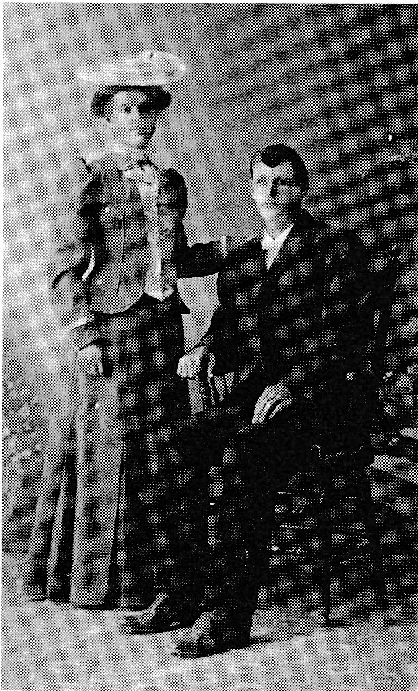

The newlyweds returned to the L'Heureux home for the festive meal. The following morn-ing they left for Ruddell. It would take almost three days of travel before they would reach their home. However, Alma didn't mind for she knew that in a few short months Josephine would be her neighbor as Alphonse and her sister were to be wed in the summer.
When Alphonse and Josephine arrived in August shortly after their wedding on the fifth, Alma shared her good news with her sister. After several years of caring for her many brothers and sisters, Alma was now going to have a child of her own. As her time grew near, Henri prepared to take her to her aunt's in Delmas. There, at the Bellavance home, their first child was born on January 28, 1908. It was a very difficult birth for the little woman so it was fortunate that a mid-wife, a "vieux savagesse" had been sent for. A healthy son, Moise, was born. Alma remained a month with her kind aunt, Malvina, and family before returning home. Even then Alma's younger sister, Matilda, came to help for several weeks. Moise, her father's namesake, gave his mother much happiness and would long be her favorite.
A year passed. Again Alma was with child. A second son, Louis, was born at home on March 6 with the assistance of a local midwife. As Alma remained in bed for some time after, her sister came again to care for the babies and see to the housework. Matilda had her hands full that spring for Louis was a colicky baby who tried even the patience of his mother.
Alma's days were busy ones as she cared for her two small boys. She worked hard to keep their home neat and clean. Evenings were pleas-ant, though quiet; Alma knitted while Henri, a keen reader, relaxed with a good book or the Ruddell News, a local newspaper published by the town merchants.
In the spring of 1910 a third son was born. He died soon after. Henri built a small wooden box. The infant was buried in the local cemetery.
As the years passed, the Alain family increased with the birth of Yvonne Medirise on March 9, 1911;
Rolland Francois on October 27, 1913;
Marie Paule Jeanne on October 27, 1915;
Edithe Marie Blandine on December 21, 1917;
Berthe Marie on March 20, 1919;
and Paul Emile Michael Joseph on October 6, 1920.
It was a fall day in 1920 when Henri drove to Battleford to bring Alma and Paul home from the hospital. With Paul's birth on October 6, Alma had the skillful help of a doctor as at the previous births of her daughters, Edithe and Berthe. Alma had learned in the hospital that Paul was troubled with poor digestion as most of her babies before him. She was given directions for a formula which she passed on to Marie-Louise, her younger sister, who was minding the children and would stay as long as Alma needed her.
Henri had moved his family into Delmas some ten years before. At first they lived in a simple wood shack. It was not very warm; in places you could see the 2 x 4's. The floors were kept up by oiling them. Then Henri began to make plans for a large home similar to those frequently seen in his native Quebec. His first step was to set up a sawmill. Once the saw, the